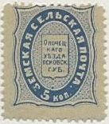
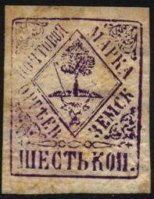
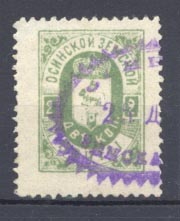
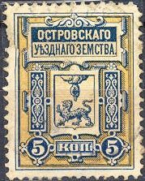

Return To Catalogue - Go to Zemstvos overview - Russia
Note: on my website many of the
pictures can not be seen! They are of course present in the
catalogue;
contact me if you want to purchase it.

5 k blue
5 k grey 5 k red 5 k blue (1891)
Note the slight differences in the design
3 k black and blue 3 k black and red 6 k black and red 6 k green and blue

6 k blue with red background?
3 k black and red 6 k blue

3 k black and red 3 k black and brown

3 k red 6 k green

3 k blue 6 k red


2 k green on green 2 k green on green (larger size) 2 k red on green (larger size) 2 k green on brown 4 k brown on brown 4 k green on brown 4 k brown on green (1897) 8 k blue on blue 8 k blue on green (1897)


2 k blue and red 2 k blue and red (other type) 2 k blue and yellow 2 k red 2 k green (1898)
4 k black and red on blue 4 k black and red

2 k black and green (exists imperforated) 2 k green and light green 4 k red and orange


3 k green 3 k olive 6 k red
3 k black on lilac 3 k black on blue 3 k black on yellow 3 k black on red
3 k brown (exists imperforate)
1 k black (5 types)
(Forgery of this stamp)

5 k green 5 k black (1882)
Very similar stamps were issued for Pskov.


5 k orange and blue 3 k green (1893) 3 k brown

3 k black, blue, brown, yellow and green
Typical cancel:


{kind=link}
{kind=link}
{kind=link}
{kind=link}